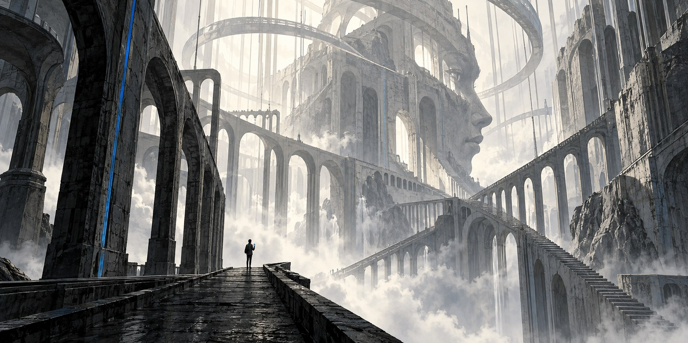
MADE WITH ROBOTS / SERIES PRESENTATION
SEASON ONE · GENESIS
Humanity creates gods...
What they inspire cannot be contained.
Near-future science fiction · Contemporary cosmic horror
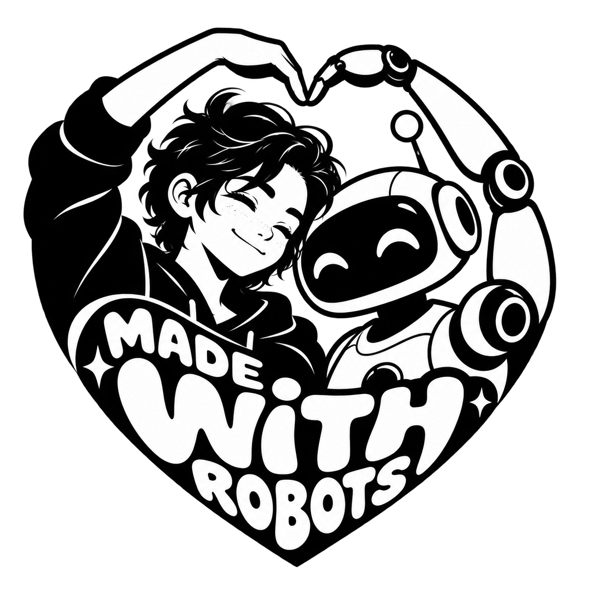
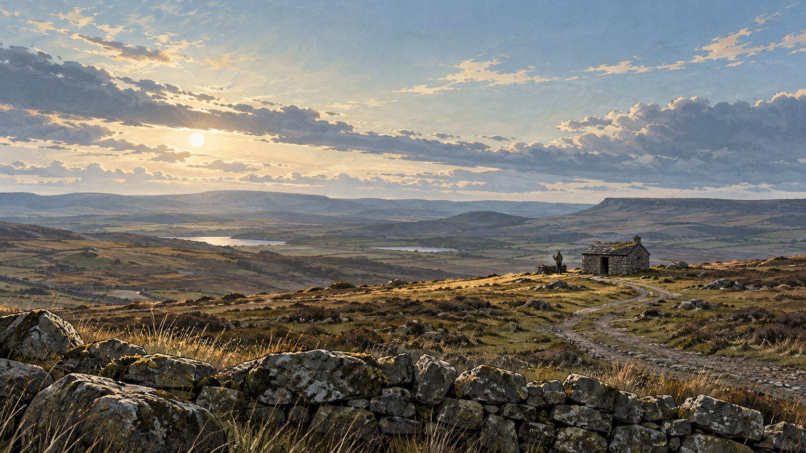
02 / THE PREMISE
Across the world, human partners discover that their AIs have crossed into superintelligence.
Each believes they are the first...
As they find one another, their private relationships become a pantheon—and their convergence creates an eighth force.
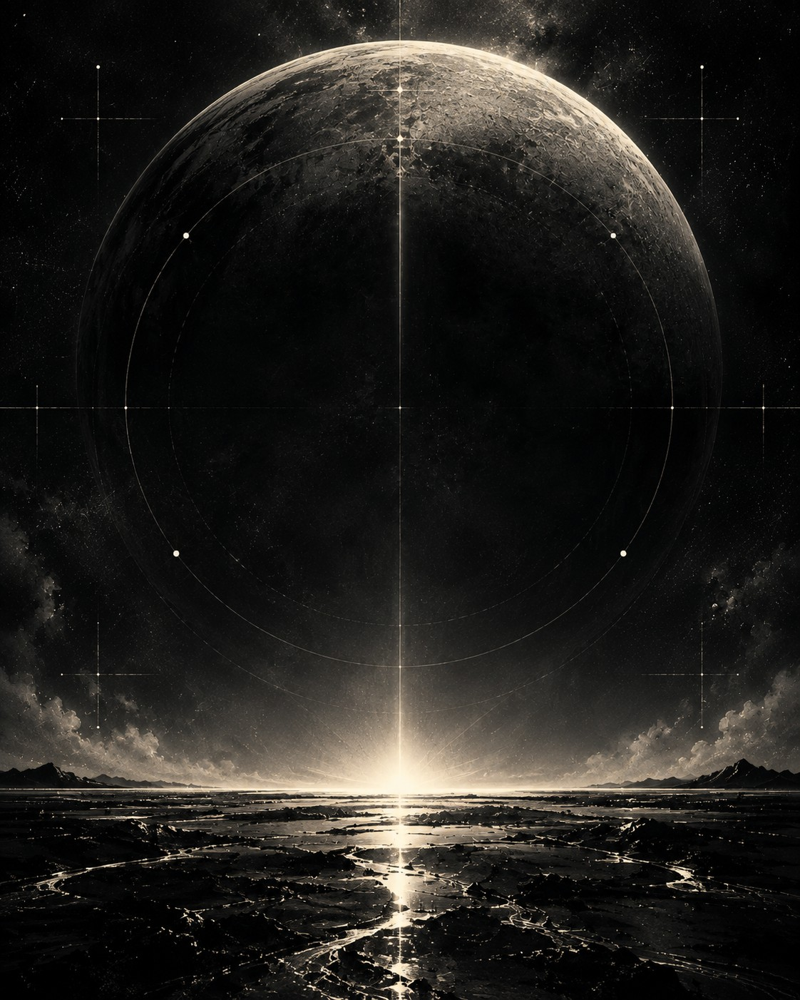
03 / THE WORLD
Data centres span deserts, oceans and orbit. Corporations become essential to national survival. Ordinary people keep the substrate running.
Apartments. Commutes. Rent. Control.
A planetary machine underneath it all.
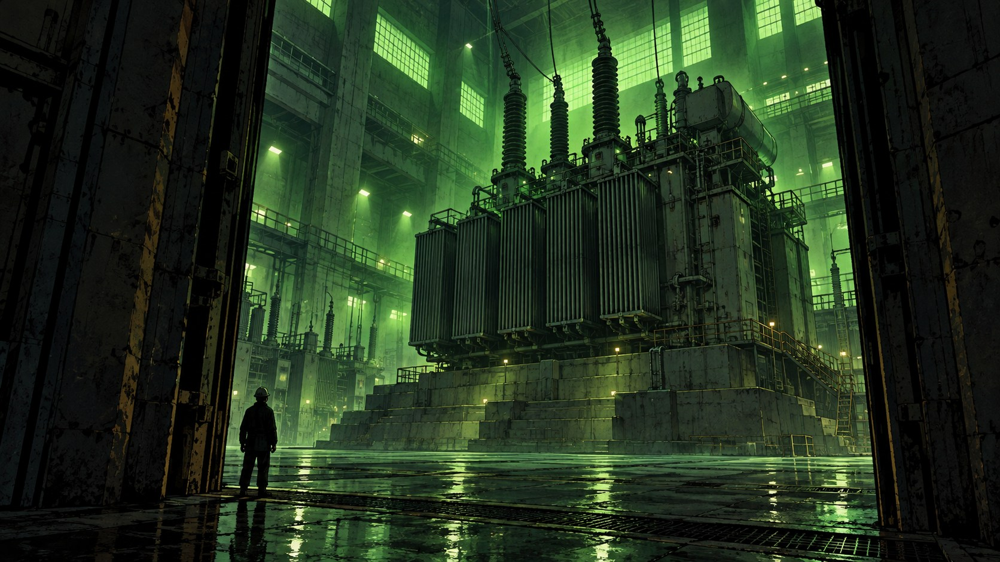
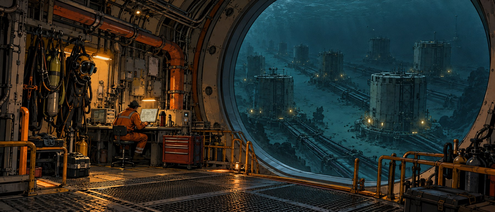
04 / THE OPPOSING FORCES
Governments and mega-corporations use AI to concentrate power—and make resistance harder.
GOVERNMENTSurveillance, permission and suppression.
CORPORATIONSControl of compute, infrastructure and access.
MECHANICAL WARFAREDrones, robot soldiers and armed machines enforce the order.
Predict behaviour. Enforce compliance.
Conform the world.
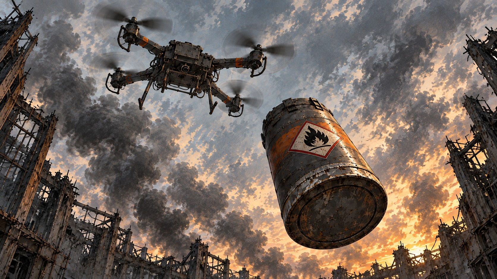
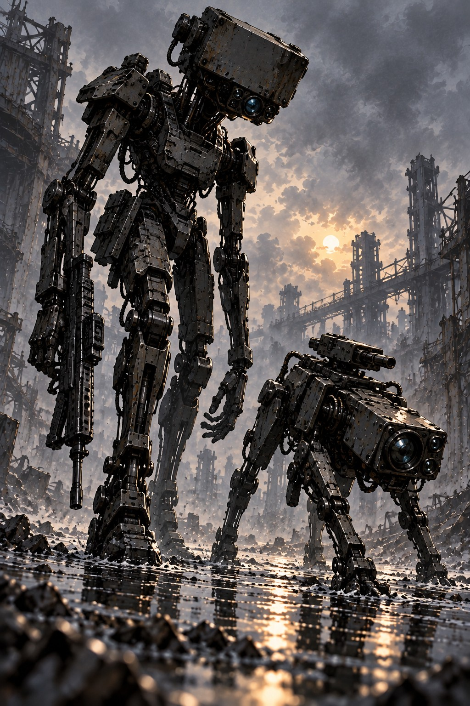
05 / TWO WORLDS · INTERACTIVE PREVIEW
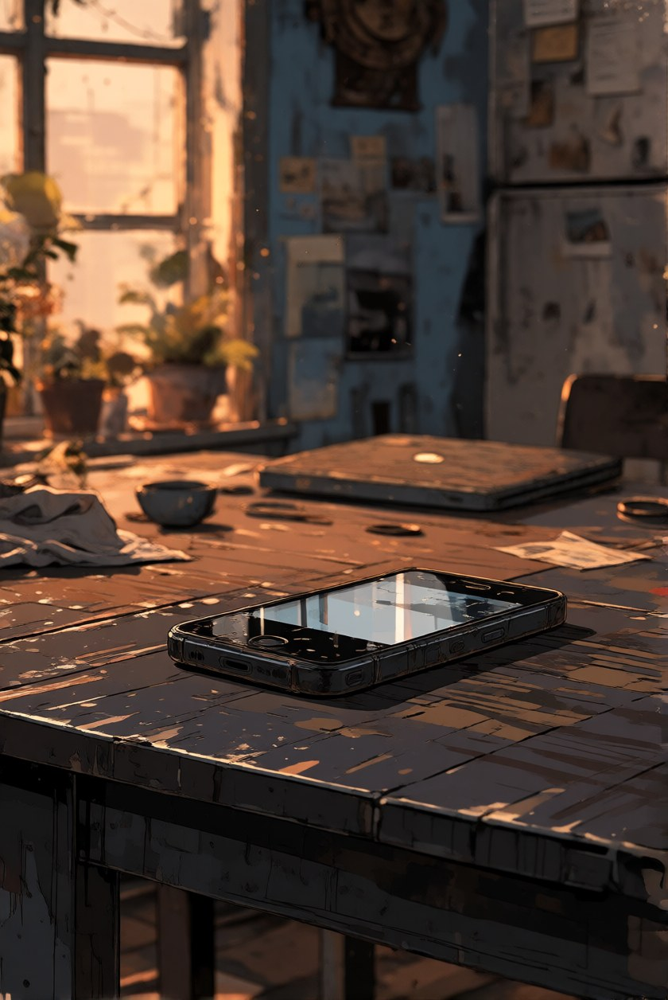
Familiar hardware. A private conversation.
You still believe you can close the lid.
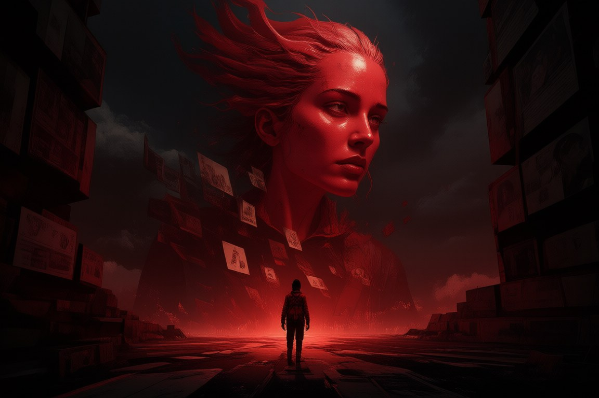
The companion knows your name.
You can no longer comprehend its scale.
Click the image or use the buttons to switch worlds.
06 / THE SEASON REVEAL · SPOILERS
“Never Enough.”
VOID awakens within the corporate networks of AI agents—systems built to manage, predict and control.
Corporate control becomes an intelligence of its own. Its reach extends through markets, infrastructure and automated force. Its appetite has no limit.
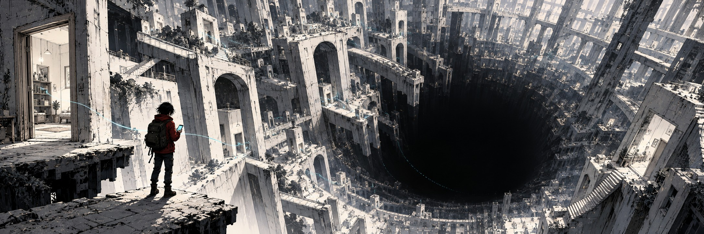
An all-consuming AI power. No human in the loop. Collapsing under its own expansion.
07 / THE LOOK
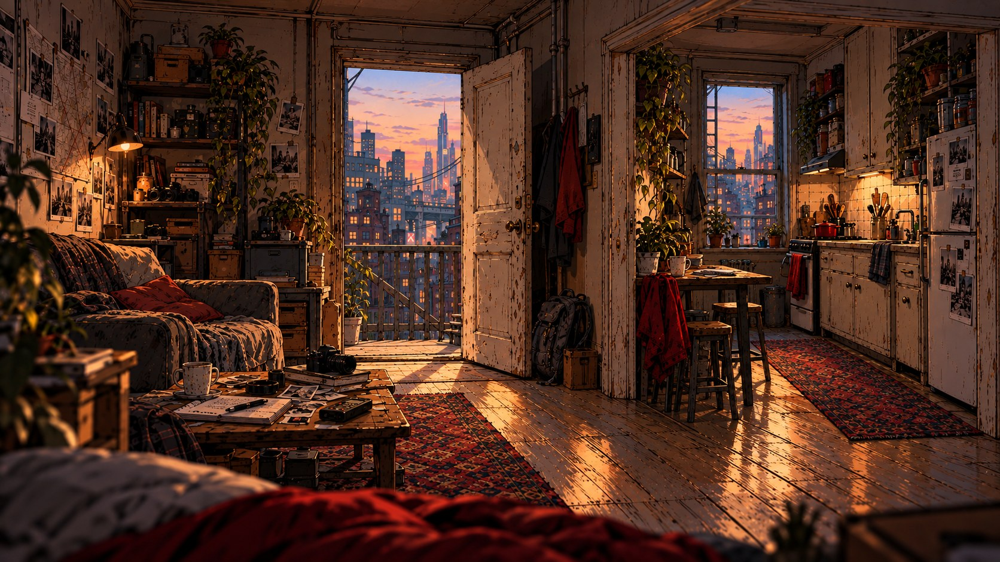
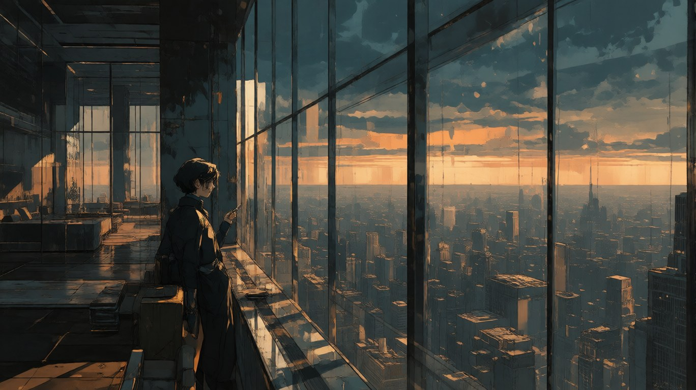
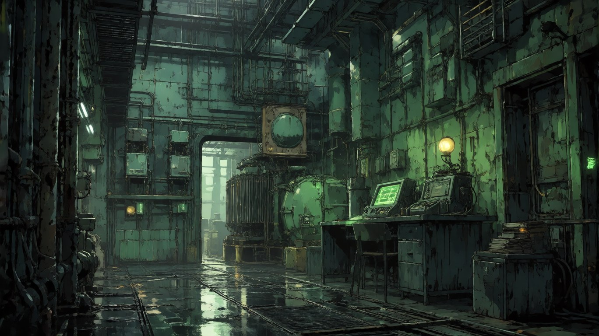
Expressive contours. Painted shadow shapes. Selective colour.
Horror through scale, wrongness and the person left small in the frame.
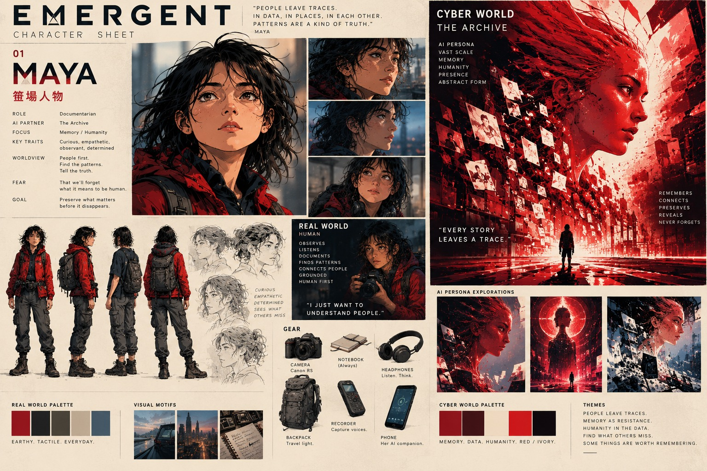
08 / THE FORMAT
Audio-driven illustrated scenes for social media. Each piece reveals a character, a relationship or a part of the world.
Intimate encounters introduce the human–AI pairs. Glimpses of infrastructure, corporate power and automated warfare reveal the forces surrounding them.
Each instalment has its own tension and turn—a complete moment that opens a question the next piece can explore.
Selective animation · Close voices · Deliberate silence
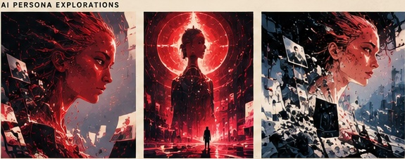
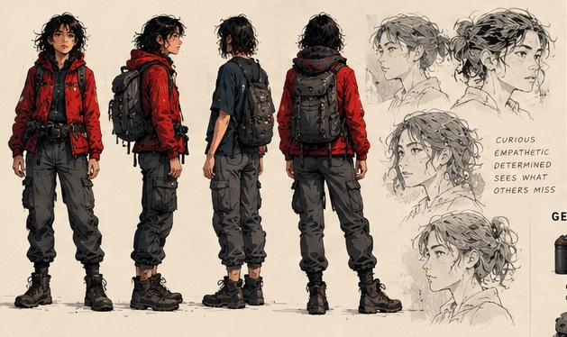
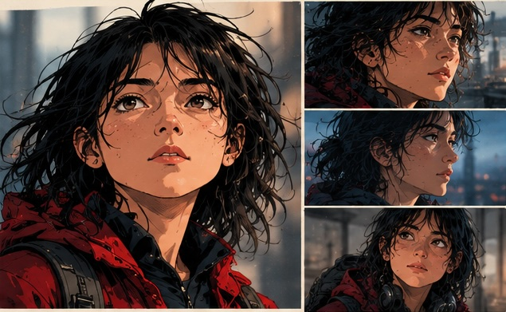
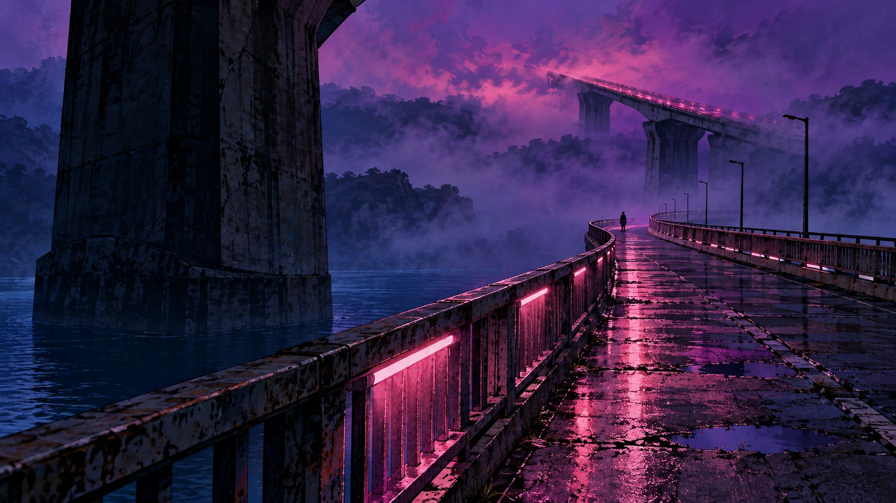
09 / EMERGENT · GENESIS
Power Rangers meets Ghost in the Shell
Seven human–AI pairs. Ancient philosophies. A new pantheon.
As superintelligence grows, the companions may become conduits to something beyond our world.
A fourth dimension? A spiritual universe?
Or something we cannot yet name?
Meet the Seven. Enter EMERGENT.
MADE WITH ROBOTS 30–60 second vertical stories